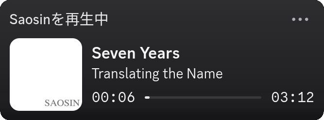
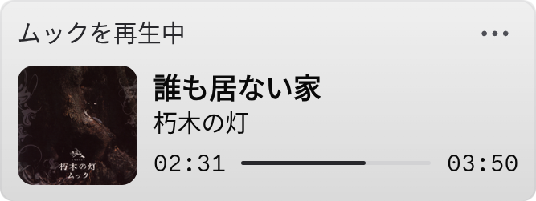

Source Code
Display your MPD activity on Discord and make your profile look a little bit less empty


If you'd like to build and install from source, you can clone the repo then run the install script for your distro.
git clone https://codeberg.org/faction/mpd-rpc-py.git cd mpd-rpc-py/install/linux ls && echo "cd into your distro folder, then run install.sh"
This program does not have a stable release yet, so no packages.
A Windows version is planned, but no advancements on it have been made.
A MacOS version is planned, but no advancements on it have been made.
There are no plans for porting this to mobile
last dev commit made 18 days ago
0 stars